Rankl
Eine Stimme mit Charakter. Ein neues Kapitel, ohne die Geschichte zu vergessen.
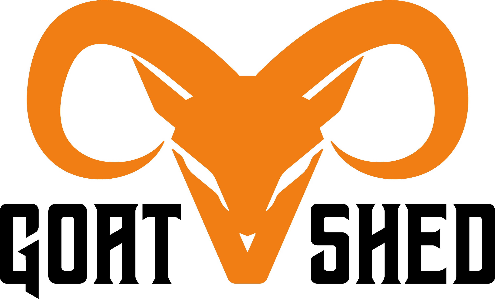
This is Goatshed
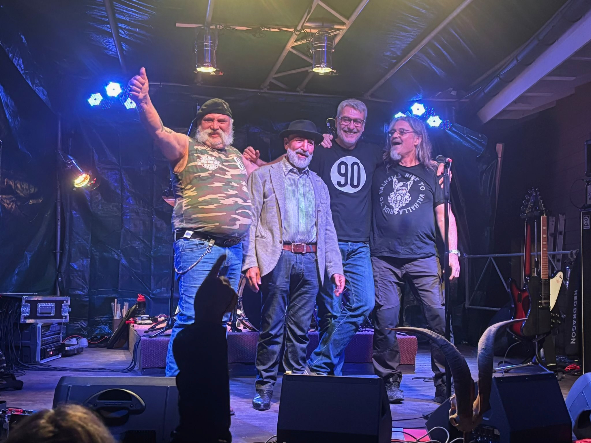
Eine Stimme mit Charakter. Ein neues Kapitel, ohne die Geschichte zu vergessen.
Gitarren, Riffs und der direkte Weg vom Verstärker in den Song.
Der tiefe Puls zwischen Blues, Rock und dem nächsten Refrain.
Grooves, Dynamik und genug Becken für eine kleine Wetterwarnung.
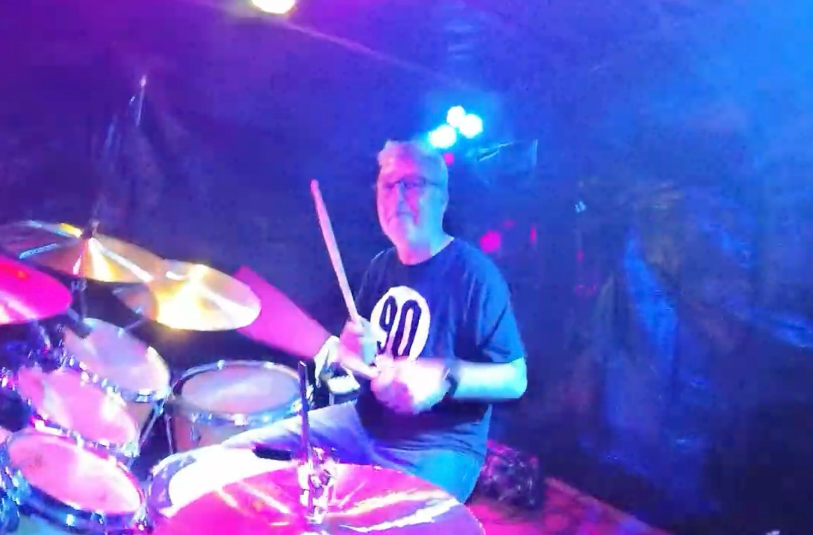
Samy · Drums
Our Music
Lege die MP3-Dateien mit diesen Namen in assets/audio/. Bis dahin bleiben die Titel als Tracklist sichtbar.
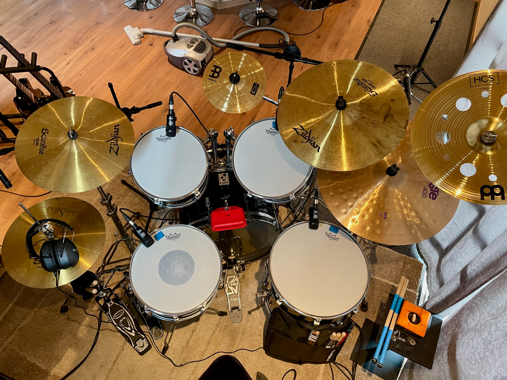
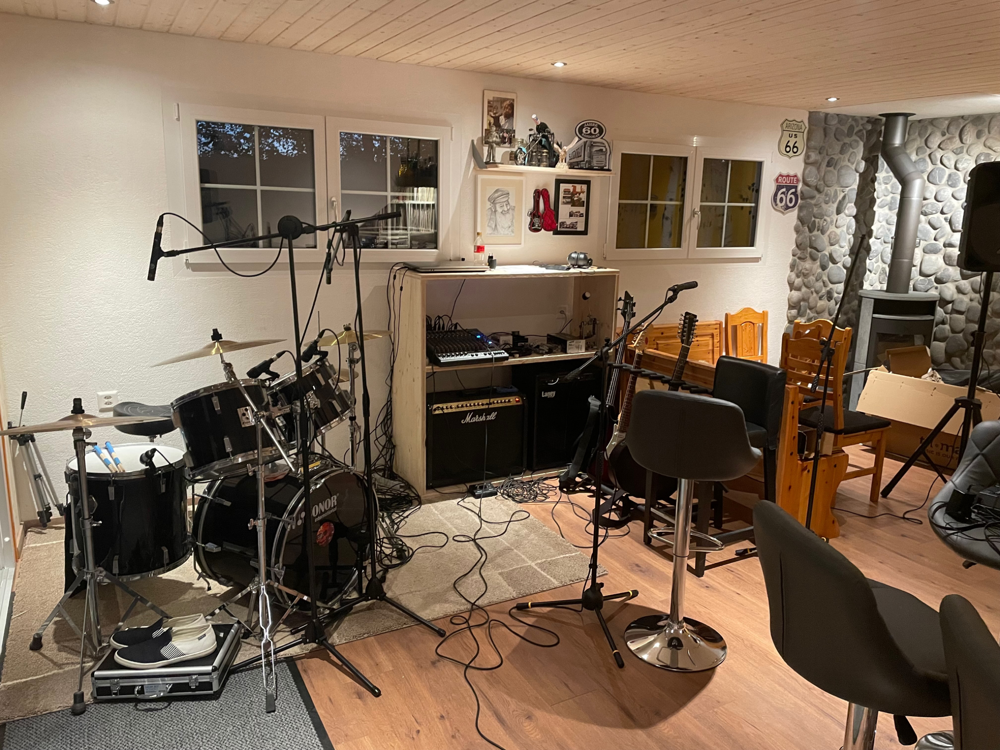
The Shed
Drums, Gitarren, Marshall, Kabel, ein Ofen und genügend Platz für eine Idee, die beim nächsten Durchlauf plötzlich zum Song wird.
Our Story
Goatshed entstand 2022 aus Jams von Gitarre und Schlagzeug in einem ehemaligen Geissenstall. Bass und Gesang kamen dazu. Aus Ideen wurden Songs, aus Songs wurde eine Band.
Die Musik blieb dabei immer direkt: Rock und Blues Rock, eigene Stücke, keine Verkleidung und kein Versuch, irgendwem hinterherzulaufen.
“We write it. We play it. That's Goatshed.”
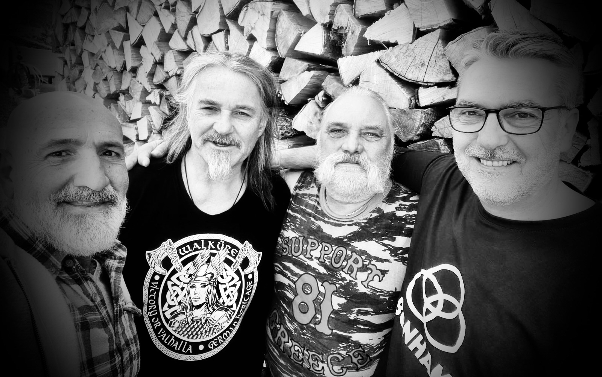
Part of our story
Toni war von Anfang an ein prägender Teil von Goatshed. Als Sänger und Songwriter brachte er eine unverwechselbare Stimme und einen Teil seiner australischen Seele in die Musik. Viele Songs tragen seine Handschrift.
Vor allem aber war Toni ein toller Mensch und Freund.
Er fehlt. Seine Stimme, seine Songs und die gemeinsame Zeit bleiben ein Teil von Goatshed.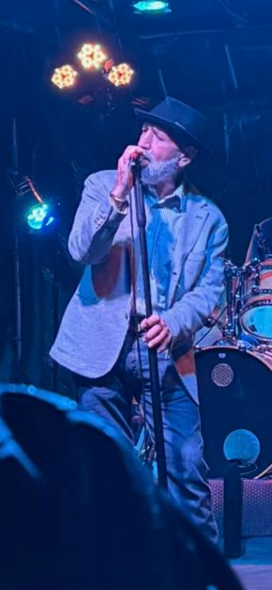
A new chapter
Nach einer Zeit ohne Sänger fand Goatshed mit Rankl eine neue Stimme. Kein Ersatz für die Vergangenheit, sondern ein neues Kapitel mit Respekt vor dem, was davor war.
New voice. Same shed. More songs.
Live
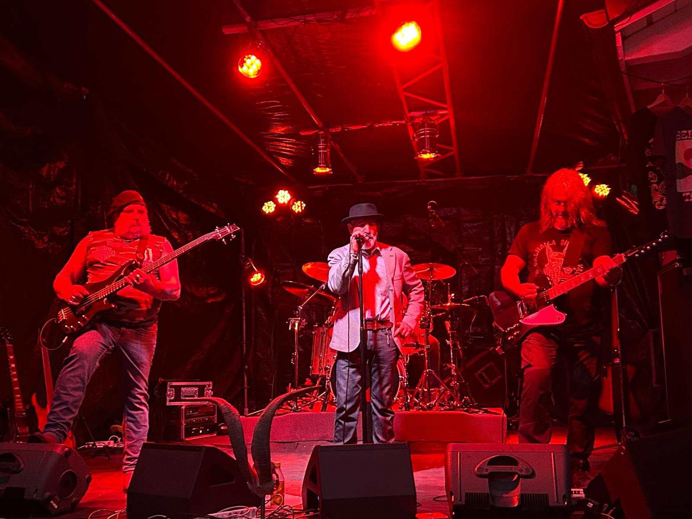
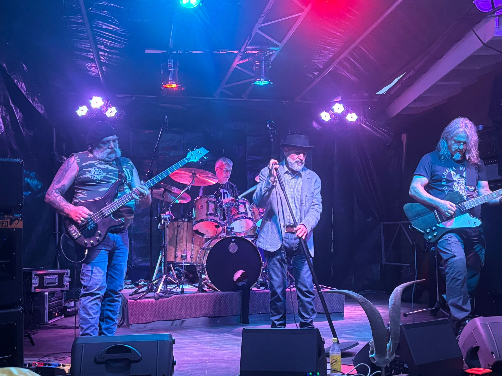
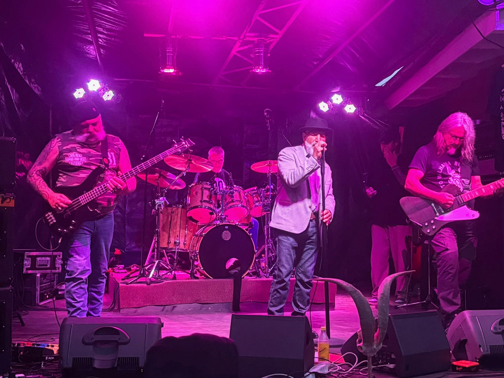
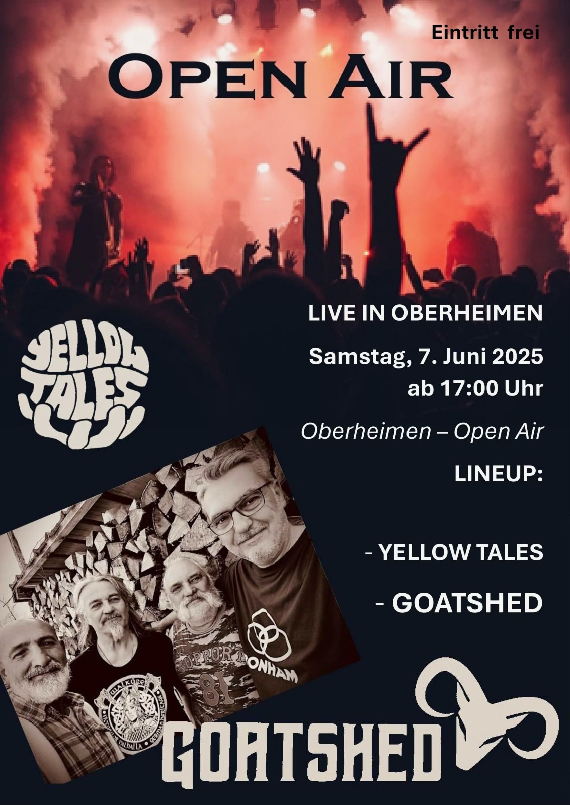
Gallery
Booking · Gigs · Festivals · Clubs
E-Mail-Adresse vor Veröffentlichung anpassen.